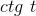
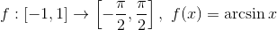
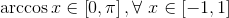

Funcții trigonometrice directe și inverse
Funcții trigonometrice directe
Funcția sinus și funcția cosinus
Definirea funcțiilor sinus și cosinus
Reamintim modul de definire al acestor funcții:
Prin funcția de acoperire universală, fiecărui număr real îi corespunde, în mod unic, un punct  pe cercul trigonometric, numit imaginea sa, notată cu .
pe cercul trigonometric, numit imaginea sa, notată cu .
Pe de altă parte, punctul , fiind în plan, are două coordonate carteziene: este abscisa punctului , iar reprezintă ordonata punctului .
Astfel, avem numărul real  , căruia i se asociază pe cercul trigonometric, punctul .
, căruia i se asociază pe cercul trigonometric, punctul .
Definim funcțiile sinus și cosinus pe intervalul ![\left [ 0,2\pi \right ]](../../media/webbooks/531/3842/images/equations/avlnzj6tx1t_5hf2yb7iaq==.gif) .
.
Definiția FE42: Funcția sinus
Numim funcție sinus, funcția care îi asociază oricărui număr real , ordonata imaginii sale de pe cercul trigonometric, adică numărul  .
.
Așadar, avem funcția :
 .
.
Definiția FE43: Funcția cosinus
Numim funcție cosinus, funcția care îi asociază oricărui număr real , abscisa imaginii sale de pe cercul trigonometric, adică numărul .
Așadar, avem funcția :
.
Definim funcțiile sinus și cosinus pe mulțimea  .
.
Avem funcția sinus, , astfel încât , cu și funcția cosinus, , astfel încât , cu .
Reprezentarea grafică a funcțiilor sinus și cosinus
Pentru a reprezenta grafic aceste funcții, construim tabelele de valori:


Graficele lor sunt reprezentate mai jos:

unde, punctele de pe grafic au coodonatele: și  .
.

unde, am reprezentat punctele: și .
Observații:
- Axa
 se mai numește axa cosinusurilor;
se mai numește axa cosinusurilor; - Axa
 se mai numește axa sinusurilor.
se mai numește axa sinusurilor.
Proprietățiile funcțiilor sinus și cosinus
Propoziția FE44: Mărginirea funcțiilor sin și cos
Funcțiile sinus și cosinus sunt mărginite.
Avem , ceea ce este echivalent cu , respectiv  , oricare ar fi
, oricare ar fi 
Pe graficele de mai sus, am evidențiat mărginirea acestor funcții prin dreptele punctate, paralele la axa , care trec prin  , respectiv
, respectiv  .
.
Propoziția FE45: Paritatea / imparitatea funcțiilor sin și cos
- Funcția sinus este o funcție impară:
 , oricare ar fi
, oricare ar fi - Funcția cosinus este o funcție pară: , oricare ar fi
Observație:
Cum funcția sinus este o funcție impară, graficul acesteia este simetric față de originea axelor.
Propoziția FE46: Intersecția graficelor cu axele
- Intersecția cu axa . Avem că:
- , dacă și numai dacă
 , cu
, cu  ; atunci ;
; atunci ; - , dacă și numai dacă
 , cu ; atunci .
, cu ; atunci .
- , dacă și numai dacă
- Intersecția cu axa . În acest caz, avem că:
- ;
 .
.
Pe graficele de mai sus, se observă că punctele de intersecție cu axa sunt: , iar cele care se intersectează cu axa sunt și .
Propoziția FE47: Monotonia funcțiilor sin și cos
Funcțiile  și nu sunt monotone pe mulțimea , dar:
și nu sunt monotone pe mulțimea , dar:
- funcția este strict crescătoare pe intervalul închis , pentru
 și este strict descrescătoare pe intervalul închis ;
și este strict descrescătoare pe intervalul închis ; - funcția este strict crescătoare pe intervalul închis , pentru , respectiv este strict descrescătoare pe intervalul închis .
Propoziția FE48: Periodicitatea funcțiilor sin și cos
Funcțiile sin și cos sunt periodice, de perioadă  și de perioadă principală .
și de perioadă principală .
- ;
- .
Observație:
Având perioadă principală , studiul acestor funcții se poate reduce la un interval de lungime  .
.
Propoziția FE49: Bijectivitatea funcțiilor sin și cos
Funcțiile sin și cos nu sunt bijective pe mulțimea , dar vom alege restricțiile lor bijective:
- ;
- .
Observație:
Cu ajutorul acestor restricții bijective, vom defini în secțiunea următoare, funcțiile trigonometrice inverse  (arcsinus) și (arccosinus).
(arcsinus) și (arccosinus).
Semnul funcțiilor sinus și cosinus
- Funcția sinus:
![\sin x\geq 0\Leftrightarrow x\in\left [ 2k\pi,(2k+1)\pi \right ],\ k\in\mathbb{Z}](https://liceunet.ro/media/webbooks/531/3842/images/equations/xq8guxczljwmcfhg4wzqda==.gif) ;
;- .
- Funcția cosinus:
- ;
 .
.
Funcția tangentă și funcția cotangentă
Definirea funcțiilor tangentă și cotangentă
Funcțiile tangentă, respectiv cotangentă sunt compuse din funcțiile sinus și cosinus.
Definiția FE50: Funcția tangentă
Fie , astfel încât , adică  .
.
Definim raportul , ca fiind funcția tangentă a numărului , notată cu .
Avem funcția tangentă:
 .
.
Definiția FE51: Funcția cotangentă
Fie , astfel încât , adică  .
.
Definim raportul , ca fiind funcția cotangentă a numărului , notată cu  .
Avem funcția cotangentă:
 .
.
Reprezentarea grafică a funcțiilor tangentă și cotangentă
Pentru a reprezenta grafic aceste funcții, construim următoarele tabele:


Reprezentarea grafică a acestor funcții este redată în figurile de mai jos:


Proprietățiile funcțiilor tangentă și cotangentă
Propoziția FE52: Mărginirea funcțiilor tg și ctg
Atât imaginea funcţiei tg, cât și imaginea funcției ctg, este reprezentată de întreaga mulţime a numerelor reale, așadar funcţiile tg și ctg nu sunt mărginite, deoarece există puncte în care acestea tind la infinit (vezi imaginile de mai sus).
În acest caz avem că:
- pentru funcția tangentă, dreapta de forma
 este o asimptotă verticală la graficul funcției tangentă.
este o asimptotă verticală la graficul funcției tangentă. - dreapta de forma , reprezintă pentru funcția cotangentă, asimptota verticală la graficul acestei funcții.
Aceste asimptote la graficele celor două funcții, sunt reprezentate în figurile de mai sus prin liniile punctate.
Propoziția FE52: Paritatea / imparitatea funcțiilor tg și ctg
- Funcția tangentă este o funcție impară, deoarece, prin definiție, ea reprezintă raportul dintre o funcţie impară (sin) şi una pară (cos):
 .
.
- Funcția cotangentă este, deasemenea, o funcție impară, deoarece, asemenea funcției tangentă, prin definiție, ea este raportul dintre o funcție pară (cos) și o funcție impară (sin):
.
Observație:
Cum funcțiile tg și ctg sunt ambele funcții impare, graficele acestora sunt simetrice în raport cu originea axelor, așa cum se poate observa în figurile de mai sus.
Propoziția FE53: Monotonia funcțiilor tg și ctg
Funcțiile tg și ctg nu sunt monotone pe mulțimea numerelor reale, dar:
- funcția tg este strict crescătoare pe intervalele determinate de două asimptote verticale consecutive;
- funcția ctg este strict descrescătoare pe intervalele determinate de două asimptote verticale consecutive.
Propoziția FE54: Periodicitatea funcțiilor tg și ctg
- Funcția tg este o funcție periodică, de perioadă și perioadă principală
 :
:
.
- Funcția ctg este o funcție periodică, de perioadă și perioadă principală :
 .
.
Propoziția FE55: Bijectivitatea funcțiilor tg și ctg
Cum funcțiile sin și cos nu sunt bijective pe mulțimea , ne rezultă că nici funcțiile tg și ctg nu sunt bijective pe mulțimea , dar, asemenea funcțiilor sin și cos, funcțiile tg și ctg au restricții bijective:
- ;
- .
Observație:
Cu ajutorul acestor restricții bijective, vom defini în secțiunea următoare, funcțiile trigonometrice inverse arctg (arctangentă ) și arcctg (arccotangentă ).
Funcții trigonometrice inverse
Funcția arcsinus și funcția arccosinus
Definirea funcțiilor arcsinus și arccosinus
Restricția bijectivă a funcției sinus este funcția .
Inversa acestei funcții este funcția arcsinus, definită mai jos.
Definiția FE56: Funcția arcsinus
Funcția  se numește funcția arcsinus.
Observații:
![\arcsin x\in\left [ -\frac{\pi}{2},\frac{\pi}{2} \right ], \forall\ x\in\left [ -1,1 \right ]](https://liceunet.ro/media/webbooks/531/3842/images/equations/urqgrwxcbspc1z9y9f5aug==.gif) .
.- Funcția arcsinus este inversa funcției sinus pe intervalul .
- Pentru funcția arcsinus trebuie să impunem următoarea condiție de existență: are sens, dacă și numai dacă .
Restricția bijectivă a funcției cosinus este funcția .
Inversa acestei funcții este funcția arccosinus, definită mai jos.
Definiția FE57: Funcția arccosinus
Funcția ![f:\left [ -1,1 \right ]\rightarrow \left [ 0,\pi \right ],\ f(x)=\arccos x](https://liceunet.ro/media/webbooks/531/3842/images/equations/ipqlj5dwocod-qle0qetkg==.gif) se numește funcția arccosinus.
se numește funcția arccosinus.
Observații:
- Funcția arccosinus este inversa funcției cosinus pe intervalul
![\left [ 0,\pi \right ]](../../media/webbooks/531/3842/images/equations/a7rvxnmkpyyxhcohihysxa==.gif) .
. - Pentru funcția arccosinus trebuie să impunem următoarea condiție de existență: are sens, dacă și numai dacă .
Reprezentarea grafică a funcțiilor arcsinus și arccosinus

Punctele de pe grafic au coordonatele: și .
Observație:
Asemenea graficului funcției sinus și graficul funcției arcsinus trece prin originea  .
.

Punctele indicare au coodonatele:  și .
și .
Proprietățiile funcțiilor arcsinus și arccosinus
Propoziția FE58: Mărginirea funcțiilor arcsin și arccos
Funcțiile arcsinus și arccosinus sunt mărginite:
- ;
- .
Propoziția FE59: Paritatea / imparitatea funcțiilor arcsin și arccos
- Funcția arcsinus este o funcție impară:
![\arcsin(-x)=-\arcsin x,\forall\ x\in\left [ -1,1 \right ]](https://liceunet.ro/media/webbooks/531/3842/images/equations/f-gwm333eeblgbgd6tax2q==.gif) .
.
- Funcția arccosinus nu este funcție pară și nici impară:
.
Observație:
Cum funcția arcsinus este o funcție impară, avem că graficul acesteia este simetric față de originea axelor, așa cum se poate observa în prima figură de mai sus.
Propoziția FE60: Monotonia funcțiilor arcsin și arccos
- Funcția arcsin este o funcție strict crescătoare pe intervalul închis .
- Funcția arccos este o funcție strict descrescătoare pe intervalul închis .
Semnul funcțiilor arcsinus și arccosinus
Semnul funcției arcsinus este redat în tabelul de mai jos:

Semnul funcției arccosinus este reprezentat în tabelul următor:

Funcția arctangentă și funcția arccotangentă
Definirea funcțiilor arctangentă și arccotangentă
Restricția bijectivă a funcției tangentă este funcția .
Inversa acestei funcții este funcția arctangentă, definită mai jos.
Definiția FE61: Funcția arctangentă
Funcția se numește funcția arctangentă.
Restricția bijectivă a funcției cotangentă este funcția .
Inversa acestei funcții este funcția arccotangentă, definită mai jos.
Definiția FE62: Funcția arccotangentă
Funcția se numește funcția arccotangentă.
Reprezentarea grafică a funcțiilor arctangentă și arccotangentă


Proprietățiile funcțiilor arctangentă și arccotangentă
Propoziția FE63: Mărginirea funcțiilor arctg și arcctg
Funcțiile arctangentă și arccotangentă sunt funcții mărginite:
- ;
- .
În figurile de mai sus, mărginirea funcțiilor arctg și arcctg este reprezentată de liniile punctate.
Propoziția FE64: Paritatea / imparitatea funcțiilor arctg și arcctg
- Funcția arctangentă este o funcție impară:
 .
.
- Funcția arccotangentă nu este funcție pară și nici impară:
.
Observație:
Cum funcția arctangentă este o funcție impară, ne rezultă că graficul acesteia este simetric față de originea axelor de coordonate, așa cum se poate observa în prima figură de mai sus.
Propoziția FE60: Monotonia funcțiilor arctg și arcctg
- Funcția arctg este o funcție strict crescătoare pe mulțimea numerelor reale, .
- Funcția arcctg este o funcție strict descrescătoare pe mulțimea numerelor reale, .
Semnul funcțiilor arctangentă și arccotangentă
Semnul funcției arctangentă este redat în tabelul de mai jos:

Semnul funcției arccotangentă este reprezentat în tabelul următor: